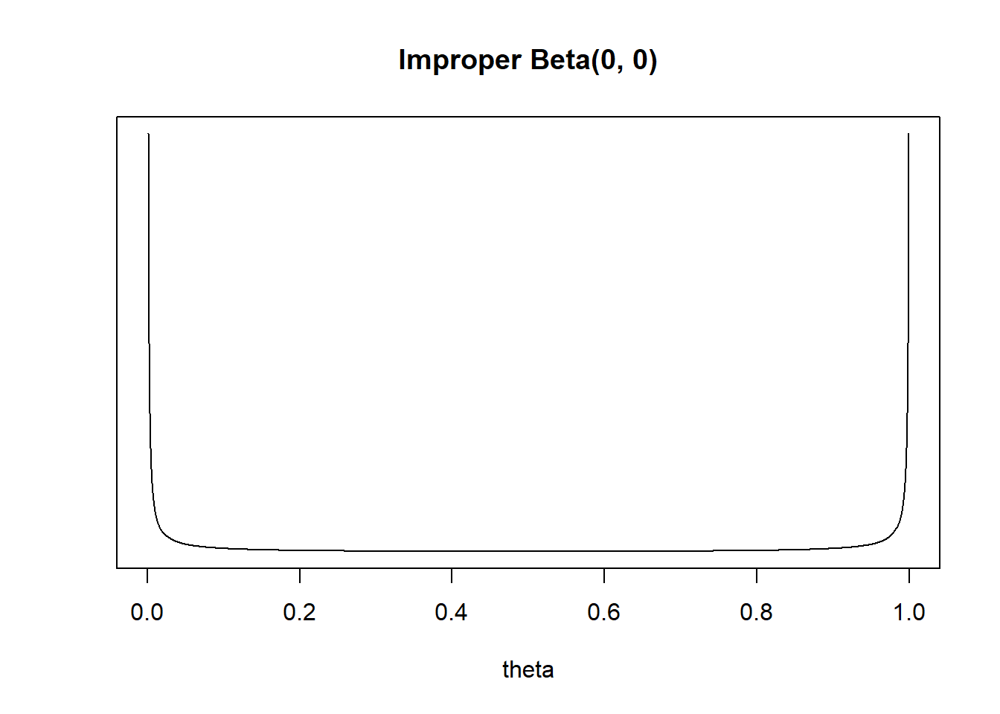
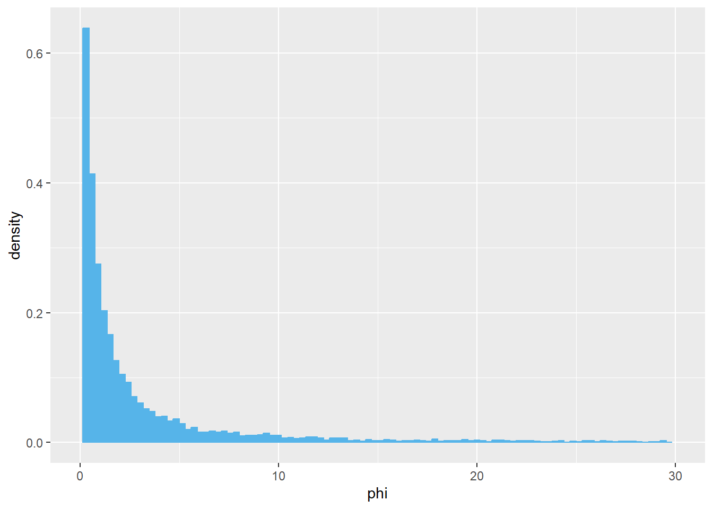
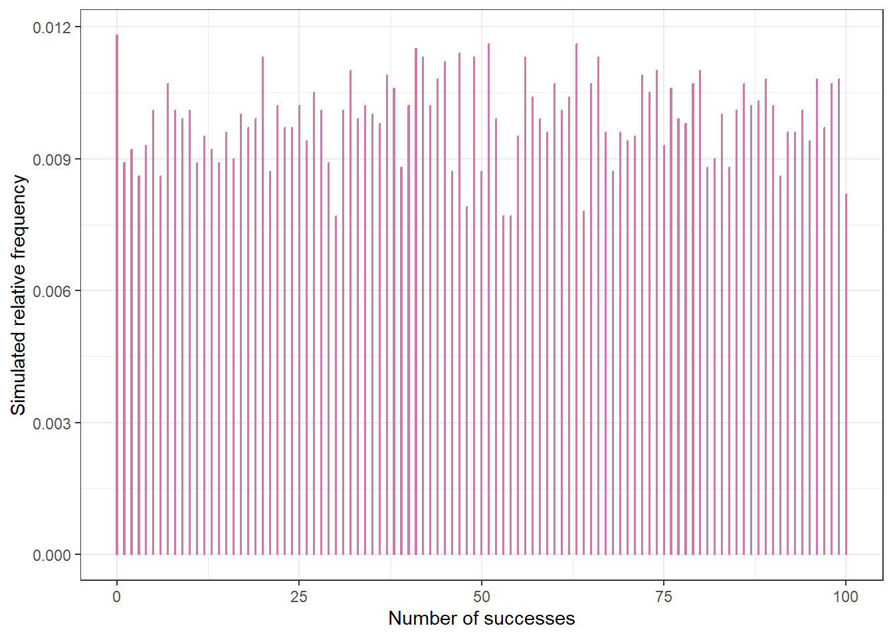

13 Considering Prior Distributions
One of the most commonly asked questions when one first encounters Bayesian statistics is “how do we choose a prior?” While there is never one “perfect” prior in any situation, we’ll noew discuss some issues to consider when choosing a prior. But first, here are a few big picture ideas to keep in mind:
- Bayesian inference is based on the posterior distribution, not the prior. Therefore, the posterior requires much more attention than the prior.
- The prior is only one part of the Bayesian model.
- In many situations, the posterior distribution is not too sensitive to reasonable changes in prior.
- Any statistical analysis is inherently subjective. Priors and Bayesian data analysis are no more inherently subjective than any of the myriad other assumptions made in statistical analysis.
- Both Bayesian and frequentist are valid approaches to statistical analyses, each with advantages and disadvantages.
- There are some issues with frequentist approaches that incorporating a prior distribution and adopting a Bayesian approach alleviates.
Example 13.1 Tamika is a basketball player who throughout her career has had a probability of 0.5 of making any three point attempt. However, her coach is afraid that her three point shooting has gotten worse. To check this, the coach has Tamika shoot a series of three pointers; she makes 7 out of 24. Does the coach have evidence that Tamika has gotten worse?
Let \(\theta\) be the probability that Tamika successfully makes any three point attempt. Assume attempts are independent.
Prior to collecting data, the coach decides that he’ll have convincing evidence that Tamika has gotten worse if the p-value is less than 0.025. Suppose the coach told Tamika to shoot 24 attempts and then stop and count the number of successful attempts. Use software to compute the p-value. Is the coach convinced that Tamika has gotten worse?
Prior to collecting data, the coach decides that he’ll have convincing evidence that Tamika has gotten worse if the p-value is less than 0.025. Suppose the coach told Tamika to shoot until she makes 7 three pointers and then stop and count the number of total attempts. Use software to compute the p-value. Is the coach convinced that Tamika has gotten worse? (Hint: the total number of attempts has a Negative Binomial distribution.)
Now suppose the coach takes a Bayesian approach and assumes a Beta(\(\alpha\), \(\beta\)) prior distribution for \(\theta\). Suppose the coach told Tamika to shoot 24 attempts and then stop and count the number of successful attempts. Identify the likelihood function and the posterior distribution of \(\theta\).
Now suppose the coach takes a Bayesian approach and assumes a Beta(\(\alpha\), \(\beta\)) prior distribution for \(\theta\). Suppose the coach told Tamika to shoot until she makes 7 three pointers and then stop and count the number of total attempts. Identify the likelihood function and the posterior distribution of \(\theta\).
Compare the Bayesian and frequentist approaches in this example. Does the “strength of the evidence” depend on how the data were collected?
- Some issues to consider when choosing a prior include, in no particular order:
- The researcher’s prior beliefs! A prior distribution is part of a statistical model, and should be consistent with knowledge about the underlying scientific problem. Researchers are often experts with a wealth of past experience that can be explicitly incorporated into the analysis via the prior distribution. Such a prior is called an informative (or weakly informative) prior.
- A regularizing prior. A prior which, when tuned properly, reduces overfitting or “overreacting” to the data.
- Noninformative prior a.k.a., (reference, vague, flat prior). A prior is sought that plays a minimal role in inference so that “the data can speak for itself”.
- Mathematical convenience. The prior is chosen so that computation of the posterior is simplified, as in the case of conjugate priors.
- Interpretation. The posterior is a compromise between the data and prior. Some priors allow for easy interpretation of the relative contributions of data and prior to the posterior. For example, think of the “prior successes and prior failures” interpretation in the Beta-Binomial model.
- Prior based on past data. Bayesian updating can be viewed as an iterative process. The posterior distribution obtained from one round of data collection can inform the prior distribution for another round.
- Prior predictive distributions. Prior predictive distributions of potential data can be used to check the reasonableness of a prior distribution of parameters before observing sample data. Prior predictive distributions “live” on the scale of the data, and are sometimes easier to interpret than prior distributions themselves, especially when there are multiple parameters. It is often helpful to tune prior distributions of parameters indirectly via prior predictive distributions rather than directly.
Here are some recommendations when choosing priors from the Stan development team.
Example 13.2 Suppose we want to estimate \(\theta\), the population proportion of Cal Poly students who wore socks at any point yesterday.
What are the possible values for \(\theta\)? What prior distribution might you consider a noninformative prior distribution?
You might choose a Uniform(0, 1) prior, a.k.a., a Beta(1, 1) prior. Recall how we interpreted the parameters \(\alpha\) and \(\beta\) in the Beta-Binomial model. Does the Beta(1, 1) distribution represent “no prior information”?
Suppose in a sample of 20 students, 4 wore socks yesterday. How would you estimate \(\theta\) with a single number based only on the data?
Assume a Beta(1, 1) prior and the 4/20 sample data. Identify the posterior distribution. Recall that one Bayesian point estimate of \(\theta\) is the posterior mean. Find the posterior mean of \(\theta\). Does this estimate let the “data speak entirely for itself”?
How could you change \(\alpha\) and \(\beta\) in the Beta distribution prior to represent no prior information? Sketch the prior. Do you see any potential problems?
Assume a Beta(0, 0) prior for \(\theta\) and the 4/20 sample data. Identify the posterior distribution. Find the posterior mode of \(\theta\). Does this estimate let the “data speak entirely for itself”?
Now suppose the parameter you want to estimate is the odds that a student wore socks yesterday, \(\phi=\frac{\theta}{1-\theta}\). What are the possible values of \(\phi\)? What might a non-informative prior look like? Is this a proper prior?
Assume a Beta(1, 1) prior for \(\theta\). Use simulation to approximate the prior distribution of the odds \(\phi\). Would you say this is a noninformative prior for \(\phi\)?
- An improper prior distribution is a prior distribution that does not integrate to 1, so is not a proper probability density.
- However, an improper proper often results in a proper posterior distribution.
- Flat priors are common choices in some situations, but are rarely ever the best choices from a modeling perspective.
- Furthermore, flat priors are generally not preserved under transformations of parameters.
Example 13.3 Suppose that \(\theta\) represents the population proportion of adults who have a particular rare disease.
Explain why you might not want to use a flat Uniform(0, 1) prior for \(\theta\).
Assume a Uniform(0, 1) prior. Suppose you will test \(n=100\) suspected cases. Use simulation to approximate the prior predictive distribution of the number in the sample who have the disease. Does this seem reasonable?
Assume a Uniform(0, 1) prior. Suppose that in \(n=100\) suspected cases, none actually has the disease. Find and interpret the posterior median. Does this seem reasonable?
- What NOT to do when considering priors.
- Do NOT choose a prior that assigns 0 probability/density to possible values of the parameter regardless of how initially implausible the values are.
- Do NOT base the prior on the observed data you will use to compute the posterior.
- Do NOT feel like you have to find that one, perfect prior.
- Do NOT worry too much about the prior!
13.1 Notes
13.1.1 Improper Beta(0, 0) prior
13.1.2 Prior distribution of odds
- Simulate a value of \(\theta\) from the Beta(1, 1) prior distribution.
- Compute the odds \(\phi = \theta / (1 - \theta)\).
- Repeat many times and summarize the simulated \(\phi\) values to approximate the prior distribution of \(\phi\).
The distribution of \(\phi\) has an extremely long right tail, so the plot is clipped below.
theta = rbeta(10000, 1, 1)
odds = theta / (1 - theta)
ggplot(data.frame(odds),
aes(x = odds)) +
geom_histogram(aes(y = after_stat(density)),
bins = 100,
col = bayes_col["prior"],
fill = bayes_col["prior"]) +
scale_x_continuous(limits = c(0, 30)) +
labs(x = "phi")
13.1.3 Prior predictive distribution
n_rep = 10000
theta_sim = rbeta(n_rep, 1, 1)
y_sim = rbinom(n_rep, 100, theta_sim)
ggplot(data.frame(y_sim),
aes(x = y_sim)) +
geom_bar(aes(y = after_stat(prop)),
col = bayes_col["posterior_predict"],
fill = bayes_col["posterior_predict"],
width = 0.1) +
labs(x = "Number of successes",
y = "Simulated relative frequency") +
theme_bw()